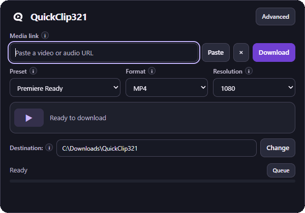

Download without a window.
Copy a link, then press Ctrl+Shift+3 for MP3, Ctrl+Shift+4 for MP4, or Ctrl+Shift+D for your last-used format. Keep working in your editor or browser.
FREE / OPEN SOURCE / WINDOWS
Download video and audio without leaving your workflow. Copy a link, press a global shortcut or click the Q icon in your Windows system tray.
Windows x64 / V3 beta.5 / Unsigned portable EXE / 12.63 MB

Copy a link, then press Ctrl+Shift+3 for MP3, Ctrl+Shift+4 for MP4, or Ctrl+Shift+D for your last-used format. Keep working in your editor or browser.
12.63 MB portable EXE or 3.93 MB ZIP. Missing media tools install automatically on first launch; additional setup data is required.
Context-aware matching across 5,215 games, 8,066 films, 5,124 series and 7,288 music records. Custom rules and folder overrides give you control.
Open from the tray, choose a format and quality, then download. Expand for batches, playlists, themes and settings only when you need them.
Try a partial download for eligible short clips, with a full-download fallback when needed. See source-size estimates and supported local frame previews.
MIT-licensed code, no account or subscription required. English and Turkish interface, saved preferences, customizable global and in-app shortcuts.
EXE size excludes media tools. Shortcuts require the app to be running. Catalog matching and partial preview depend on source metadata and format.
The preview build is unsigned. Verify its SHA-256 checksum from the release page and keep Windows security enabled. Requires Windows x64 with WebView2. If media tools are missing, first launch automatically performs verified setup (approximately 170-200 MB). Run on startup defaults to on; disable it in Settings if desired.
Site compatibility depends on yt-dlp. No claim of universal site or format support is made.
MIT-licensed source code. Public beta: help shape the next version with your feedback. Use media you have permission to download.
Report an issue or suggest a feature →